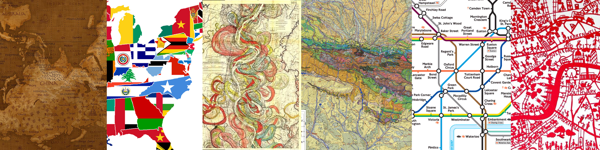

Making Beautiful Maps
by Alan Palazzolo and Thomas Turnbull
for DrupalCon Chicago 2011
a
Alan
- Code for America
- Drupal OpenLayers module
- Other Drupaly things
t
Thomas - tom_o_t
- Zagat
- Green Map
- Drupal Events in NYC
t
Audience
- Themers
- Designers
- Developers
??
Topics
- Current mapping solutions in Drupal
- Why make maps beautiful?
- Easier solutions, like Cloudmade, MapBox
- Markers and styling
- Custom interfaces
- Complex solutions (see Dev Seed post)
??
Mapping Solutions in Drupal
??
Why Make Maps Beautiful?
- Google Maps are like Stock Photography
- Branding
- Powerful way of presenting information (find a good example from news) Pakistan Flood Response Map
??
Beautiful Maps Out of the Box?
- MapBox - contains the Maki Icon Set, Map Tiles, Map graphics? (insert image? link to demo site?)
- OpenLayers Plus provides legend, permalink, tooltip, popup, scaled points (insert graphic, link to demo?)
- Anything else?
??
Some Simple Steps
- OpenLayers: custom icon sets, graphics (insert graphics, demo, module?)
- OpenLayers: custom styles (insert graphic, demo, module?)
- GMap: custom icon sets (insert graphic, demo)
- Anything else?
??
Advanced Coding
- OpenLayers behavior overrides
- TileMill generated custom tiles
- GMap customizing popup
- More?
?
Code Example
Drupal.behaviors.openlayers_behavior_fullscreen = function(context) {
var fullscreenPanel;
var data = $(context).data('openlayers');
if (data && data.map.behaviors['openlayers_behavior_fullscreen']) {
var opts = data.map.behaviors['openlayers_behavior_fullscreen'];
// Create new panel control and add.
fullscreenPanel = new OpenLayers.Control.Panel(
{
displayClass: 'openlayers_behavior_fullscreen_button_panel'
}
);
data.openlayers.addControl(fullscreenPanel);
}
}
??
Upcoming Technologies
- Google Maps API v3
- ???
a
Credits
- Drupal OpenLayers Developers: zzolo, tmcw, phayes, strk, and more
- Presentation by: zzolo and tom_o_t
- OpenLayers Monster by Saman Bemel Benrud
- Technology used: jQuery, jQuery Presentation, SyntaxHighlighter, and Corner
- Presentation and demo source on GitHub
a
Image Credits
- http://strangemaps.files.wordpress.com/2009/06/usstates.jpg http://fc06.deviantart.net/fs48/f/2009/198/d/e/World_Map___Upside_Down_by_vladstudio.jpg http://strangemaps.files.wordpress.com/2007/10/276540-poster594x420mm_eng.jpg http://longstreet.typepad.com/thesciencebookstore/images/2008/06/10/mississipi.jpg http://ccgm.free.fr/icones/Pyrenees_Geol_image.jpg http://cdn5.mydeco.com/product_images/full/cbc92390d16bfd0fd703f43dc98adbd5107e24a4.jpg http://www.walking-uk.com/images/tube_map.gif
a
Geospatial BoF's
- Drupal Geospatial Support BoF.
- Drupal Geospatial Developers BoF.
2011 Alan Palazzolo and Thomas Turnbull